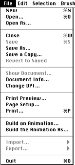
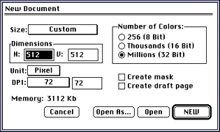
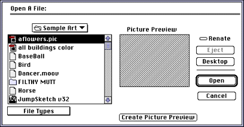
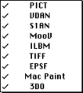
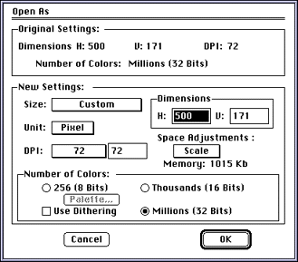
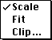
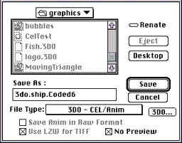
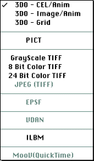
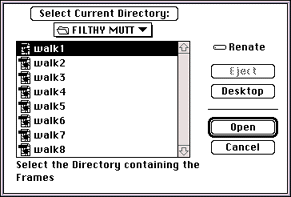

This section discusses File menu commands that have unique functionality
in 3DO Animator. Figure 1 shows all commands in the File menu:

Figure 1: File menu.
File menu commands discussed in this section
The following File menu commands are discussed in this section:
New
Open
Open As...
Save As...
Build an Animation
Build an Animation As...
New command
When you select New from the File menu, 3DO Animator displays the New
document dialog (see Figure 2) that lets you specify size, dimensions, and
other characteristics of the new document. The defaults displayed in the
dialog depend on the current Preferences settings. Preferences settings
are discussed in the Studio/32 manual.

Figure 2: New Document dialog.
Open command
Keyboard Shortcut: Command - O
When you select Open from the File menu, 3DO Animator displays the Open
File dialog, which is a Macintosh standard file dialog with additional
file format options, a Create Picture Preview button, and a Picture
Preview window.

Figure 3: Open File dialog.
To open a file, click on the filename and then select Open, or
double-click on the filename. Click Cancel to exit the dialog.
Thefollowing options not available in the standard Macintosh file
selection dialog.
File Types

Provides a selection of file formats from which you can choose. The File
window in the dialog shows only files that are in the format you have
checked.
3DO Animator supports the following formats:
PICT-Macintosh file format for exchanging files between
different paint programs.
VDAN-3DO Animator-specific format for 8-bit to 32-bit
animations.
S1AN-Animations from Studio/1.
MooV-QuickTime movie files.
ILBM-Animations from Deluxe Paint Amiga or ILBM pictures.
TIFF(Tag Image File Format)-Format supported by most
scanner manufacturers and page layout programs. 3DO Animator reads
and writes 8- and 24-bit color, JPEG, and grayscale TIFF files.
EPSF (Encapsulated PostScript File)-If an EPSF file contains a PICT
Preview portion, 3DO Animator can read that portion (only). 3DO Animator
cannot read an EPSF file that doesn't have a PICT Preview portion.
MacPaint-MacPaint file.
3DO-A file in 3DO file format.
Picture Preview window
The Picture Preview window displays a miniature 8-bit version of a
selected PICT or TIFF document or an animation. The width and height (in
pixels) of the picture appears below the Picture Preview window. If the
selected PICT or TIFF file was not saved with a picture preview, click the
Create Picture Preview button to build one. The next time you open that
file, a picture preview appears in the Picture Preview window.
The Picture Preview window automatically displays reduced versions of PICT
files. It shows previews of TIFF files only after you've saved them in 3DO
Animator.
When you select Open As from the File menu, 3DO Animator lets you open a
PICT or VDAN file and change the dimensions and other characteristics of
the file as you load it. The new document opens as Untitled.
You can open the document using different dimensions, DPI (dots per inch),
or number of colors (bit depth). Using Open As is an easy way to open a
32-bit document as an 8-bit document, for example, or to adjust the DPI so
the document prints differently.
When you select Open As, 3DO Animator first displays a standard file
dialog. After you have selected a file, the Open As dialog
appears.

Figure 4: Open As dialog.
The Open As dialog lets you modify the original document using the
following options:
Original Settings
Shows horizontal and vertical dimensions, DPI, and number of colors the
document can support.
Any of these settings can be changed in the New Settings box.
Space Adjustments

Lets you resize the document and change the depth of the document.
Scale-3DO Animator preserves the aspect ratio of the original
document. For example, if the original document (image) was 640 x 480
pixels, and the new document is 400 x 300 pixels, the new document has the
same 4 to 3 ratio as the original. If the new document does not have the
same ratio as the original, the program creates an image that preserves
the aspect ratio (in our example, 4 to 3) and fills the rest of the
document with white space.
Fit-Forces (compresses or stretches) the entire original document into
the dimensions of the new document. If the new dimension settings are not
the same ratio as the original, some distortion of the image results.
Clip-Lets you define the size of the document. Before selecting Clip,
specify the new dimensions of the document by typing in H and V values in
the Open As dialog. If the new document is much smaller than the original,
it will be completely filled with what appears at the center of the
original document. The edges of the original will be lost in the new
document. You can move the outline to select a different part of the
original image. If the new document is larger than the original, 3DO
Animator places the original in the center of the new document and
surrounds it with white space.
Memory
Displays the RAM required by the original document. If you change the
dimensions of the original, Memory displays the RAM required for the new
document settings.
Note: Note: This is for PICT files only.
Number of Colors
Lets you choose the bit depth for the new document.
You can check Use Dithering when you open a 32-bit document in either 256
(8-bit) mode, or Thousands (16-bit) mode. The colors available in the
current palette determine the quality of the dithering. If you open a
32-bit document and don't change the number of colors, Use Dithering is
dimmed, because dithering is unnecessary with true color.
The Palette button lets you choose a palette for remapping if you open a
document using 256 colors.
Save As command
When you select Save As from the File menu, 3DO Animator displays the Save
As dialog.

Figure 5: Save As dialog.
The Save As dialog is a standard Macintosh Save As dialog with several
additional options discussed in below. When the dialog appears, the
current name of the document (which may be Untitled) is highlighted. You
can rename the document by typing a new name.
The following options are supported:
File Type

Lets you select the file format for the image or cel. The format you
select becomes the default until you redefine it using the Save As
procedure.
You can save files in the following formats:
3DO-Cel/Anim-3DO cel or a 3DO animation.
3DO-Image/Anim- 3DO image.
PICT-Apple's preferred file format for exchanging files between
different paint programs.
TIFF-TIFF (Tag Image File Format) format, supported by most
scanner manufacturers and page layout programs.
EPSF-EPSF (Encapsulated PostScript File) format. If an
EPSF file has a PICT Preview portion, 3DO Animator can read that portion
(only).
VDAN-3DO Animator animation file format.
ILBM-Deluxe Paint Amiga format (picture or animation).
MooV-QuickTime movie format. The standard QuickTime
dialog for setting the compression parameters is displayed.Make
sure the Frames per Second number is set correctly
3DO...
Only available if you select one of the 3DO formats. You can use this
button to set a number of flags and other options for the cel you are
saving.
Save Anim in Raw Format
After you have selected the file type (any type but VDAN), you can save
each frame of an animation separately by checking the Save Anim in Raw
Format checkbox. 3DO Animator saves each frame under the chosen name with
the number of the frame as a suffix.
LZW File Compression
Only available when you're saving TIFF files. LZW's guaranteed "lossless"
compression routine can make a file as much as 50 percent smaller than its
noncompressed version. However, when a file is saved using LZW, 3DO
Animator takes longer to open and save it.
No Preview
Conserves disk space without loss in performance by eliminating the
picture preview from the save. This is especially useful if you're saving
a document for use with a HyperCard stack. Since the stack doesn't require
or support a preview function, any file you save without checking the No
Preview box would waste the memory required to create the preview. No
Preview is the default setting for 3DO files.
Build an Animation command
When you select Build an Animation from the File menu, 3DO Animator
displays a file selection dialog. All the pictures in the folder you
select are displayed in alphabetical order. Select the directory (folder)
containing the frames included in the animation. Click Select Current
Directory to build the animation.

Figure 6: File selection dialog for building an animation.
Build an Animation As command
When you select Build an Animation from the File menu, 3DO Animator
prompts you for a folder to select (as described for Build an Animation)
and in addition offers the options of the Open As
command after you have selected a directory.